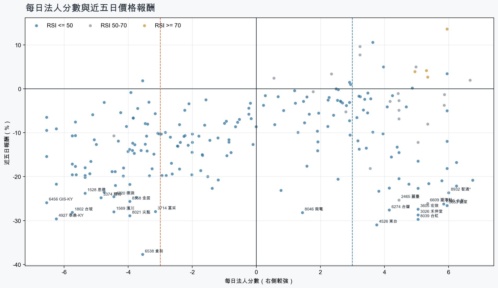
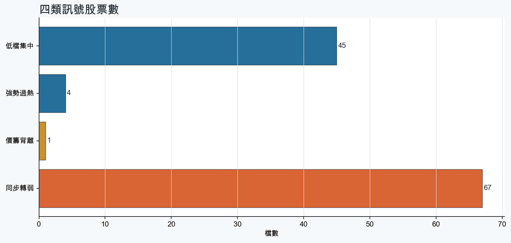
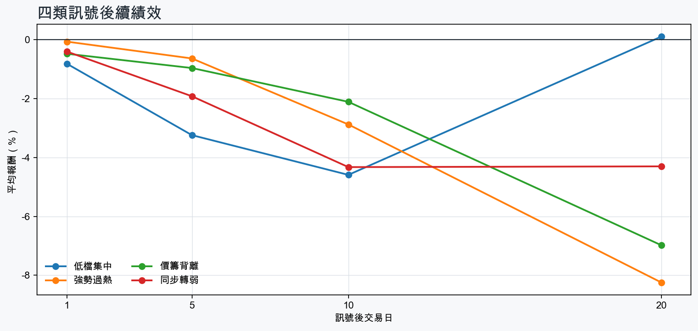

市場情緒偏空
近5日法人合計-8,147,752 張
篩選池上漲比例7.7%
籌碼好 / RSI低15 檔
籌碼差 / 價跌15 檔



EPS × PE VALUATION
法人常用的相對估值
顯示保守、基準與樂觀估值帶，不把單一數字包裝成精準目標價。
最新累計 EPS 依季數年化 × 同產業有效 P/E 的 Q25／中位數／Q75。排除本公司、非正 P/E，並以 1.5×IQR 排除離群值。估值帶是公開資料篩選值，不是法人目標價；未使用分析師預估 EPS。
MOOD × MONEY
情緒與籌碼雷達
熱度代表被討論程度；情緒分與法人方向分開計算。熱門不等於適合追價，樣本不足也不硬判多空。
| 股票 | 情緒 | 討論熱度 | 情緒 × 籌碼 | 情緒 × 基本面 |
|---|---|---|---|---|
| 3037 欣興同步轉弱 | 偏空 -29.7信心 30 | 1000 篇 / 0 留言 / 3 則新聞 | 情籌雙弱法人分 -3.8 | 基本面佳、情緒悲觀基本面分 +3.6 |
| 1802 台玻同步轉弱 | 偏空 -29.7信心 30 | 1000 篇 / 0 留言 / 3 則新聞 | 情籌雙弱法人分 -5.8 | 基本面佳、情緒悲觀基本面分 +3.6 |
| 3189 景碩同步轉弱 | 偏空 -29.7信心 30 | 1000 篇 / 0 留言 / 3 則新聞 | 情籌雙弱法人分 -4.0 | 基本面佳、情緒悲觀基本面分 +3.6 |
| 1303 南亞同步轉弱 | 中性分歧 +9.9信心 30 | 1000 篇 / 0 留言 / 3 則新聞 | 高熱分歧法人分 -4.4 | 基本面與情緒分歧基本面分 +3.6 |
| 6285 啟碁價籌背離 | 中性分歧 +0.0信心 30 | 1000 篇 / 0 留言 / 3 則新聞 | 高熱分歧法人分 -3.5 | 基本面與情緒分歧基本面分 +3.0 |
| 9933 中鼎強勢過熱 | 偏多 +29.7信心 30 | 1000 篇 / 0 留言 / 3 則新聞 | 情籌共振法人分 +6.0 | 基本面與情緒共振基本面分 +2.3 |
| 1477 聚陽強勢過熱 | 中性分歧 +0.0信心 30 | 1000 篇 / 0 留言 / 3 則新聞 | 高熱分歧法人分 +5.0 | 基本面與情緒分歧基本面分 +3.0 |
| 1476 儒鴻強勢過熱 | 偏多 +29.7信心 30 | 1000 篇 / 0 留言 / 3 則新聞 | 情籌共振法人分 +5.3 | 基本面與情緒共振基本面分 +3.0 |
| 6199 天品強勢過熱 | 中性分歧 +0.0信心 30 | 1000 篇 / 0 留言 / 3 則新聞 | 高熱分歧法人分 +5.3 | 基本面與情緒分歧基本面分 +3.6 |
| 1229 聯華低檔集中 | 中性分歧 +0.0信心 30 | 1000 篇 / 0 留言 / 3 則新聞 | 高熱分歧法人分 +4.0 | 基本面與情緒分歧基本面分 +1.7 |
| 2323 中環低檔集中 | 偏空 -29.7信心 30 | 1000 篇 / 0 留言 / 3 則新聞 | 法人布局、市場悲觀法人分 +3.6 | 基本面佳、情緒悲觀基本面分 +3.0 |
| 3665 貿聯-KY低檔集中 | 中性分歧 +0.0信心 30 | 1000 篇 / 0 留言 / 3 則新聞 | 高熱分歧法人分 +6.0 | 基本面與情緒分歧基本面分 +3.6 |
01
籌碼好 / RSI低
優先研究基本面；法人續買且價格止穩時，才適合分批觀察。
| 股票 / 確認狀態 | 每日法人分 | 浦男式近似 | 法人加速度 | RSI / 相對強弱 | 量價確認 | 融資融券 | 每週集保確認 | 基本面 | EPS × 同業 P/E 估值 | 情緒 / 情籌 | 近期消息 | 論壇討論 |
|---|---|---|---|---|---|---|---|---|---|---|---|---|
| 3227 原相等待確認 · 91 分籌碼有訊號，但價格尚未確認 | +6.0法人 +1,652 張 / 5 天 | 接近 · 80法人籌碼偏多；法人買盤加速；買超具延續性；留意未站月線、中期均線未翻多 | +141 張近3日 +889 / 連續 +5 日 | 48.2相對大盤 +13.5% | 量比 1.16確認分 +2.2收盤跌破20日線；20日線低於60日線 | -0.2%融資 -4 張 / 融券 +1 張 | -0.07 pp1000張 +0.18 pp | 單月營收年增 +3.0%；累計營收年增 +6.0%；2026 Q3 累計 EPS 9.79仍需觀察下一期財報延續性來源：公開資訊觀測站 | 基準 NT$ 240.4估值帶 156.6–366.1現價 178.5 · 估值帶內 · 距基準 +34.7%2026 Q3 累計 EPS 9.79 → 年化 13.05半導體同業 P/E 12.00／18.42／28.05 · n=155 · 信心較高以 Q3 累計 EPS 年化，不等同分析師全年預估來源：TWSE／TPEx 每日本益比 | 樣本不足 +0.0熱度 60 / 信心 10情緒樣本不足 | 【11:28 即時新聞】原相(3227)盤中走強，三大法人買盤成盤面焦點CMoney投資網誌 · 11/17 | 近期沒有明確提及本股的論壇樣本 |
| 1229 聯華可研究 · 94 分籌碼與價格確認，可列研究清單 | +4.0法人 +5,588 張 / 5 天 | 接近 · 86站上月線；法人籌碼偏多；法人買盤加速；留意中期均線未翻多 | +2,408 張近3日 +3,655 / 連續 +5 日 | 49.5相對大盤 +16.0% | 量比 1.39確認分 +4.620日線低於60日線 | -%融資 - 張 / 融券 - 張 | -0.08 pp1000張 -0.15 pp | 單月營收年增 +8.0%；2026 Q3 累計 EPS 2.67；2026 Q3 累計營益率 22.0%累計營收年增 -3.7%來源：公開資訊觀測站 | 基準 NT$ 55.79估值帶 42.26–69.06現價 39.60 · 低於估值帶 · 距基準 +40.9%2026 Q3 累計 EPS 2.67 → 年化 3.56食品工業同業 P/E 11.87／15.67／19.40 · n=24 · 信心較高以 Q3 累計 EPS 年化，不等同分析師全年預估來源：TWSE／TPEx 每日本益比 | 中性分歧 +0.0熱度 100 / 信心 30高熱分歧 | 【10:48 即時新聞】聯華(1229)盤中小漲，中低價穩健股吸引資金關注CMoney投資網誌 · 11/19【即時新聞】聯華(1229)獲避險資金青睞，中低價股匯聚短多人氣！CMoney投資網誌 · 11/17 | 近期沒有明確提及本股的論壇樣本 |
| 5328 華容等待確認 · 80 分籌碼有訊號，但價格尚未確認 | +6.2法人 +1,759 張 / 5 天 | 未命中 · 55法人籌碼偏多；法人買盤加速；買超具延續性；留意未站月線、中期均線未翻多 | +1,451 張近3日 +1,539 / 連續 +5 日 | 27.2相對大盤 -20.9% | 量比 1.12確認分 -1.0收盤跌破20日線；20日線低於60日線；近20日弱於大盤 | -1.6%融資 -85 張 / 融券 -7 張 | +1.21 pp1000張 +1.21 pp | 單月營收年增 +46.7%；累計營收年增 +25.6%；2026 Q3 累計 EPS 0.582026 Q3 累計營益率 3.4%來源：公開資訊觀測站 | 基準 NT$ 14.05估值帶 9.95–20.94現價 32.80 · 高於估值帶 · 距基準 -57.2%2026 Q3 累計 EPS 0.58 → 年化 0.77電子零組件同業 P/E 12.87／18.17／27.08 · n=143 · 信心較高以 Q3 累計 EPS 年化，不等同分析師全年預估來源：TWSE／TPEx 每日本益比 | 樣本不足 +0.0熱度 0 / 信心 0情緒樣本不足 | 近期沒有通過股票語境篩選的新聞 | 近期沒有明確提及本股的論壇樣本 |
| 2609 陽明等待確認 · 80 分籌碼有訊號，但價格尚未確認 | +4.2法人 +20,109 張 / 5 天 | 接近 · 73中期均線偏多；法人籌碼偏多；買超具延續性；留意未站月線、法人買盤未加速 | -1,589 張近3日 +8,476 / 連續 +5 日 | 31.8相對大盤 +9.3% | 量比 1.20確認分 +0.4收盤跌破20日線；法人買盤減速 | -%融資 - 張 / 融券 - 張 | +1.00 pp1000張 +0.99 pp | 單月營收年增 +82.4%；累計營收年增 +23.2%；2026 Q3 累計 EPS 7.37仍需觀察下一期財報延續性來源：公開資訊觀測站 | 基準 NT$ 91.68估值帶 76.75–130.0現價 57.30 · 低於估值帶 · 距基準 +60.0%2026 Q3 累計 EPS 7.37 → 年化 9.83航運業同業 P/E 7.81／9.33／13.23 · n=26 · 信心較高以 Q3 累計 EPS 年化，不等同分析師全年預估來源：TWSE／TPEx 每日本益比 | 中性分歧 +0.0熱度 84 / 信心 20高熱分歧 | 陽明大股東台航法說：陽明股利可期 法人估台航全年EPS約3.5元工商時報 · 11/19陽明Q3EPS5.32元較市場預估值高21% 有法人估Q4EPS4.15元ETtoday財經雲 · 11/17 | 近期沒有明確提及本股的論壇樣本 |
| 2323 中環可研究 · 88 分籌碼與價格確認，可列研究清單 | +3.6法人 +6,319 張 / 4 天 | 接近 · 90站上月線；法人籌碼偏多；法人買盤加速；留意中期均線未翻多 | +339 張近3日 +3,348 / 連續 -1 日 | 46.2相對大盤 +13.1% | 量比 1.44確認分 +3.420日線低於60日線 | -%融資 - 張 / 融券 - 張 | -0.10 pp1000張 -0.02 pp | 單月營收年增 +32.4%；累計營收年增 +18.8%；2026 Q3 累計 EPS 2.172026 Q3 累計營益率 5.1%來源：公開資訊觀測站 | 基準 NT$ 55.23估值帶 33.39–77.08現價 11.05 · 低於估值帶 · 距基準 +399.9%2026 Q3 累計 EPS 2.17 → 年化 2.89光電同業 P/E 11.54／19.09／26.64 · n=70 · 信心較高以 Q3 累計 EPS 年化，不等同分析師全年預估來源：TWSE／TPEx 每日本益比 | 偏空 -29.7熱度 100 / 信心 30法人布局、市場悲觀 | 光電股跌到滿臉綠！面板三雄全收黑、大立光暴跌430元 中環連5漲遭斷、逾20檔個股跌停FTNN 新聞網 · 11/19焦點股》中環：前三季EPS2.17元 爆量狂飆自由財經 · 11/16 | 近期沒有明確提及本股的論壇樣本 |
| 9939 宏全等待確認 · 88 分籌碼有訊號，但價格尚未確認 | +4.7法人 +2,683 張 / 4 天 | 接近 · 76法人籌碼偏多；法人買盤加速；買超具延續性；留意未站月線、中期均線未翻多 | +1,665 張近3日 +2,258 / 連續 +4 日 | 37.8相對大盤 +9.8% | 量比 1.61確認分 +3.0收盤跌破20日線；20日線低於60日線 | -%融資 - 張 / 融券 - 張 | -1.95 pp1000張 -1.56 pp | 單月營收年增 +18.3%；累計營收年增 +4.5%；2026 Q3 累計 EPS 9.84仍需觀察下一期財報延續性來源：公開資訊觀測站 | 基準 NT$ 154.6估值帶 134.2–221.5現價 117.0 · 低於估值帶 · 距基準 +32.1%2026 Q3 累計 EPS 9.84 → 年化 13.12其他同業 P/E 10.23／11.78／16.88 · n=64 · 信心較高以 Q3 累計 EPS 年化，不等同分析師全年預估來源：TWSE／TPEx 每日本益比 | 樣本不足 +9.9熱度 60 / 信心 10情緒樣本不足 | 【10:04 即時新聞】宏全(9939)盤中小漲，市場聚焦日本包材合作布局CMoney投資網誌 · 11/19 | 近期沒有明確提及本股的論壇樣本 |
| 2547 日勝生等待確認 · 81 分籌碼有訊號，但價格尚未確認 | +3.6法人 +2,117 張 / 5 天 | 接近 · 65法人籌碼偏多；法人買盤加速；買超具延續性；留意未站月線、中期均線未翻多 | +374 張近3日 +1,351 / 連續 +8 日 | 33.3相對大盤 +10.5% | 量比 1.18確認分 +1.4收盤跌破20日線；20日線低於60日線；流動性偏低 | -%融資 - 張 / 融券 - 張 | +0.13 pp1000張 +0.21 pp | 單月營收年增 +193.2%；累計營收年增 +84.9%；2026 Q3 累計 EPS 0.30仍需觀察下一期財報延續性來源：公開資訊觀測站 | 基準 NT$ 3.51估值帶 2.43–5.11現價 9.25 · 高於估值帶 · 距基準 -62.0%2026 Q3 累計 EPS 0.30 → 年化 0.40建材營造同業 P/E 6.08／8.78／12.77 · n=64 · 信心較高以 Q3 累計 EPS 年化，不等同分析師全年預估來源：TWSE／TPEx 每日本益比 | 樣本不足 +0.0熱度 0 / 信心 0情緒樣本不足 | 近期沒有通過股票語境篩選的新聞 | 近期沒有明確提及本股的論壇樣本 |
| 8932 智通*等待確認 · 79 分籌碼有訊號，但價格尚未確認 | +6.0法人 +3,990 張 / 5 天 | 未命中 · 55法人籌碼偏多；法人買盤加速；買超具延續性；留意未站月線、中期均線未翻多 | +3,527 張近3日 +3,740 / 連續 +5 日 | 18.7相對大盤 -20.9% | 量比 2.41確認分 -1.0收盤跌破20日線；20日線低於60日線；近20日弱於大盤 | +0.8%融資 +452 張 / 融券 +9 張 | +0.13 pp1000張 +0.38 pp | 單月營收年增 +18.2%；累計營收年增 +14.5%；2026 Q3 累計 EPS 1.60仍需觀察下一期財報延續性來源：公開資訊觀測站 | 基準 NT$ 33.60估值帶 25.94–52.91現價 57.10 · 高於估值帶 · 距基準 -41.2%2026 Q3 累計 EPS 1.60 → 年化 2.13數位雲端同業 P/E 12.16／15.75／24.80 · n=29 · 信心較高以 Q3 累計 EPS 年化，不等同分析師全年預估來源：TWSE／TPEx 每日本益比 | 樣本不足 +0.0熱度 0 / 信心 0情緒樣本不足 | 近期沒有通過股票語境篩選的新聞 | 近期沒有明確提及本股的論壇樣本 |
| 8261 富鼎等待確認 · 78 分籌碼有訊號，但價格尚未確認 | +6.0法人 +1,533 張 / 5 天 | 未命中 · 55法人籌碼偏多；法人買盤加速；買超具延續性；留意未站月線、中期均線未翻多 | +444 張近3日 +954 / 連續 +5 日 | 27.6相對大盤 -16.9% | 量比 1.44確認分 -1.0收盤跌破20日線；20日線低於60日線；近20日弱於大盤 | -%融資 - 張 / 融券 - 張 | +0.89 pp1000張 +0.30 pp | 單月營收年增 +10.4%；累計營收年增 +6.3%；2026 Q3 累計 EPS 4.58仍需觀察下一期財報延續性來源：公開資訊觀測站 | 基準 NT$ 112.5估值帶 73.28–171.3現價 101.5 · 估值帶內 · 距基準 +10.8%2026 Q3 累計 EPS 4.58 → 年化 6.11半導體同業 P/E 12.00／18.42／28.05 · n=155 · 信心較高以 Q3 累計 EPS 年化，不等同分析師全年預估來源：TWSE／TPEx 每日本益比 | 樣本不足 +0.0熱度 0 / 信心 0情緒樣本不足 | 近期沒有通過股票語境篩選的新聞 | 近期沒有明確提及本股的論壇樣本 |
| 8096 擎亞等待確認 · 78 分籌碼有訊號，但價格尚未確認 | +6.2法人 +1,787 張 / 5 天 | 未命中 · 55法人籌碼偏多；法人買盤加速；買超具延續性；留意未站月線、中期均線未翻多 | +725 張近3日 +1,103 / 連續 +5 日 | 27.7相對大盤 -13.4% | 量比 1.71確認分 -1.0收盤跌破20日線；20日線低於60日線；近20日弱於大盤 | -1.3%融資 -143 張 / 融券 +6 張 | -0.17 pp1000張 -0.27 pp | 單月營收年增 +370.3%；累計營收年增 +122.7%；2026 Q3 累計 EPS 8.512026 Q3 累計營益率 2.7%來源：公開資訊觀測站 | 基準 NT$ 98.72估值帶 73.64–121.3現價 59.00 · 低於估值帶 · 距基準 +67.3%2026 Q3 累計 EPS 8.51 → 年化 11.35電子通路同業 P/E 6.49／8.70／10.69 · n=26 · 信心較高以 Q3 累計 EPS 年化，不等同分析師全年預估來源：TWSE／TPEx 每日本益比 | 樣本不足 +0.0熱度 0 / 信心 0情緒樣本不足 | 近期沒有通過股票語境篩選的新聞 | 近期沒有明確提及本股的論壇樣本 |
| 3665 貿聯-KY等待確認 · 76 分籌碼有訊號，但價格尚未確認 | +6.0法人 +2,279 張 / 5 天 | 接近 · 61法人籌碼偏多；法人買盤加速；買超具延續性；留意未站月線、中期均線未翻多 | +426 張近3日 +1,605 / 連續 +6 日 | 40.6相對大盤 -9.2% | 量比 2.01確認分 -1.0收盤跌破20日線；20日線低於60日線；近20日弱於大盤 | -%融資 - 張 / 融券 - 張 | -1.62 pp1000張 +0.33 pp | 單月營收年增 +80.0%；累計營收年增 +44.4%；2026 Q3 累計 EPS 48.77仍需觀察下一期財報延續性來源：公開資訊觀測站 | 基準 NT$ 1,083估值帶 790.1–1,384現價 1,440 · 高於估值帶 · 距基準 -24.8%2026 Q3 累計 EPS 48.77 → 年化 65.03其他電子同業 P/E 12.15／16.66／21.28 · n=69 · 信心較高以 Q3 累計 EPS 年化，不等同分析師全年預估來源：TWSE／TPEx 每日本益比 | 中性分歧 +0.0熱度 100 / 信心 30高熱分歧 | 三大法人買賣超 – 外資買超(3653)健策、(3008)大立光，投信買超(3665)貿聯-KY、(2330)台積電，法人合計賣超461.03億元永豐金證券 · 11/193665 貿聯-KY - 熱門股－貿聯 營運看旺助攻漲停 04:10 2026/11... - 股市爆料同學會CMoney · 11/19 | 近期沒有明確提及本股的論壇樣本 |
| 1210 大成等待確認 · 80 分籌碼有訊號，但價格尚未確認 | +4.9法人 +4,738 張 / 5 天 | 接近 · 83站上月線；法人籌碼偏多；買超具延續性；留意中期均線未翻多、法人買盤未加速 | -3,296 張近3日 +1,258 / 連續 +6 日 | 45.4相對大盤 +17.0% | 量比 1.12確認分 +1.020日線低於60日線；法人買盤減速 | -%融資 - 張 / 融券 - 張 | -0.58 pp1000張 -0.76 pp | 單月營收年增 +14.6%；累計營收年增 +10.0%；2026 Q3 累計 EPS 2.572026 Q3 累計營益率 4.0%來源：公開資訊觀測站 | 基準 NT$ 53.70估值帶 40.67–66.48現價 51.10 · 估值帶內 · 距基準 +5.1%2026 Q3 累計 EPS 2.57 → 年化 3.43食品工業同業 P/E 11.87／15.67／19.40 · n=24 · 信心較高以 Q3 累計 EPS 年化，不等同分析師全年預估來源：TWSE／TPEx 每日本益比 | 偏多 +29.7熱度 100 / 信心 30情籌共振 | 【11:24 即時新聞】大成鋼(2027)盤中小漲，法人對鋼鋁需求延續布局CMoney投資網誌 · 11/19【10:41 即時新聞】大成(1210)盤中小漲守穩五字頭，加工食品布局續受關注CMoney投資網誌 · 11/19 | 近期沒有明確提及本股的論壇樣本 |
| 2305 全友等待確認 · 74 分籌碼有訊號，但價格尚未確認 | +5.8法人 +3,055 張 / 4 天 | 未命中 · 50法人籌碼偏多；法人買盤加速；買超具延續性；留意未站月線、中期均線未翻多 | +1,303 張近3日 +2,652 / 連續 +3 日 | 22.7相對大盤 -30.3% | 量比 0.86確認分 -1.8收盤跌破20日線；20日線低於60日線；近20日弱於大盤 | -%融資 - 張 / 融券 - 張 | -0.07 pp1000張 -0.83 pp | 單月營收年增 +165.3%；累計營收年增 +129.5%；2026 Q3 累計 EPS 0.85仍需觀察下一期財報延續性來源：公開資訊觀測站 | 基準 NT$ 14.63估值帶 11.24–19.05現價 29.65 · 高於估值帶 · 距基準 -50.6%2026 Q3 累計 EPS 0.85 → 年化 1.13電腦及週邊同業 P/E 9.92／12.91／16.81 · n=82 · 信心較高以 Q3 累計 EPS 年化，不等同分析師全年預估來源：TWSE／TPEx 每日本益比 | 樣本不足 -9.9熱度 60 / 信心 10情緒樣本不足 | 盈餘：全友(2305)股價遭警示，自結10月歸屬母公司淨利3011萬元，EPS 0.15元富聯網 · 11/19 | 近期沒有明確提及本股的論壇樣本 |
| 2472 立隆電等待確認 · 74 分籌碼有訊號，但價格尚未確認 | +5.8法人 +1,623 張 / 4 天 | 未命中 · 55法人籌碼偏多；法人買盤加速；買超具延續性；留意未站月線、中期均線未翻多 | +223 張近3日 +1,192 / 連續 +3 日 | 26.5相對大盤 -23.6% | 量比 1.19確認分 -1.3收盤跌破20日線；20日線低於60日線；近20日弱於大盤 | -%融資 - 張 / 融券 - 張 | -0.74 pp1000張 -1.58 pp | 單月營收年增 +60.6%；累計營收年增 +29.3%；2026 Q3 累計 EPS 6.91仍需觀察下一期財報延續性來源：公開資訊觀測站 | 基準 NT$ 169.2估值帶 119.3–254.2現價 130.5 · 估值帶內 · 距基準 +29.7%2026 Q3 累計 EPS 6.91 → 年化 9.21電子零組件同業 P/E 12.95／18.37／27.59 · n=143 · 信心較高以 Q3 累計 EPS 年化，不等同分析師全年預估來源：TWSE／TPEx 每日本益比 | 樣本不足 +0.0熱度 0 / 信心 0情緒樣本不足 | 近期沒有通過股票語境篩選的新聞 | 近期沒有明確提及本股的論壇樣本 |
| 6531 愛普*等待確認 · 66 分籌碼有訊號，但價格尚未確認 | +6.8法人 +3,045 張 / 5 天 | 未命中 · 48法人籌碼偏多；買超具延續性；量價健康；留意未站月線、中期均線未翻多 | -172 張近3日 +1,352 / 連續 +5 日 | 29.4相對大盤 -18.5% | 量比 0.92確認分 -4.2收盤跌破20日線；20日線低於60日線；近20日弱於大盤；法人買盤減速 | -%融資 - 張 / 融券 - 張 | +1.48 pp1000張 +1.19 pp | 單月營收年增 +155.9%；累計營收年增 +111.9%；2026 Q3 累計 EPS 15.54仍需觀察下一期財報延續性來源：公開資訊觀測站 | 基準 NT$ 364.7估值帶 248.6–581.2現價 536.0 · 估值帶內 · 距基準 -32.0%2026 Q3 累計 EPS 15.54 → 年化 20.72半導體同業 P/E 12.00／17.60／28.05 · n=155 · 信心較高以 Q3 累計 EPS 年化，不等同分析師全年預估來源：TWSE／TPEx 每日本益比 | 樣本不足 +0.0熱度 60 / 信心 10情緒樣本不足 | 6531 愛普* - 打開就可 - 股市爆料同學會CMoney · 11/19 | 近期沒有明確提及本股的論壇樣本 |
02
籌碼好 / RSI高
趨勢強但不追價，等待量縮、RSI降溫或回測支撐。
| 股票 / 確認狀態 | 每日法人分 | 浦男式近似 | 法人加速度 | RSI / 相對強弱 | 量價確認 | 融資融券 | 每週集保確認 | 基本面 | EPS × 同業 P/E 估值 | 情緒 / 情籌 | 近期消息 | 論壇討論 |
|---|---|---|---|---|---|---|---|---|---|---|---|---|
| 9933 中鼎等待拉回 · 100 分等拉回，不追價 | +6.0法人 +38,435 張 / 5 天 | 命中 · 96站上月線；中期均線偏多；法人籌碼偏多；留意動能位置非最佳 | +33,733 張近3日 +36,983 / 連續 +8 日 | 73.7相對大盤 +46.5% | 量比 1.82確認分 +6.5價格、量能與籌碼未見明顯弱項 | -%融資 - 張 / 融券 - 張 | +3.48 pp1000張 +2.82 pp | 單月營收年增 +53.9%；2026 Q3 累計 EPS 4.86；2026 Q3 累計營益率 10.8%累計營收年增 -6.7%來源：公開資訊觀測站 | 基準 NT$ 76.33估值帶 66.87–109.4現價 56.60 · 低於估值帶 · 距基準 +34.9%2026 Q3 累計 EPS 4.86 → 年化 6.48其他同業 P/E 10.32／11.78／16.88 · n=64 · 信心較高以 Q3 累計 EPS 年化，不等同分析師全年預估來源：TWSE／TPEx 每日本益比 | 偏多 +29.7熱度 100 / 信心 30情籌共振 | 中鼎（9933）在建工程破 5,000 億元，靠什麼把訂單變成獲利？口袋證券 · 11/17【13:01 即時新聞】中鼎(9933)盤中小跌守穩高檔，外資連續買超成焦點CMoney投資網誌 · 11/19 | 近期沒有明確提及本股的論壇樣本 |
| 1477 聚陽等待拉回 · 92 分等拉回，不追價 | +5.0法人 +3,347 張 / 3 天 | 命中 · 89站上月線；中期均線偏多；法人籌碼偏多；留意法人買盤未加速、動能位置非最佳 | -1,409 張近3日 +962 / 連續 +1 日 | 72.2相對大盤 +24.2% | 量比 1.65確認分 +2.5法人買盤減速 | -%融資 - 張 / 融券 - 張 | +1.24 pp1000張 +1.28 pp | 單月營收年增 +15.1%；累計營收年增 +1.3%；2026 Q3 累計 EPS 11.62仍需觀察下一期財報延續性來源：公開資訊觀測站 | 基準 NT$ 195.8估值帶 138.1–319.0現價 224.0 · 估值帶內 · 距基準 -12.6%2026 Q3 累計 EPS 11.62 → 年化 15.49紡織纖維同業 P/E 8.91／12.64／20.59 · n=30 · 信心較高以 Q3 累計 EPS 年化，不等同分析師全年預估來源：TWSE／TPEx 每日本益比 | 中性分歧 +0.0熱度 100 / 信心 30高熱分歧 | 紡織業大豐收 聚陽股價逆勢抗跌理財周刊 · 11/19【1119台股盤後】加權摜破年線、櫃買破底，限空令2.0上路，巴菲特護城河策略鎖定【聯強】、【聚陽】、【裕融】永豐金證券 · 11/19 | 近期沒有明確提及本股的論壇樣本 |
| 1476 儒鴻等待拉回 · 94 分等拉回，不追價 | +5.3法人 +2,307 張 / 5 天 | 接近 · 83站上月線；中期均線偏多；法人籌碼偏多；留意法人買盤未加速、RSI過熱 | -1,399 張近3日 +964 / 連續 +7 日 | 82.0相對大盤 +35.3% | 量比 2.00確認分 +2.5法人買盤減速 | -%融資 - 張 / 融券 - 張 | +2.01 pp1000張 -0.29 pp | 單月營收年增 +10.7%；累計營收年增 +5.9%；2026 Q3 累計 EPS 18.70仍需觀察下一期財報延續性來源：公開資訊觀測站 | 基準 NT$ 315.2估值帶 222.2–513.4現價 384.5 · 估值帶內 · 距基準 -18.0%2026 Q3 累計 EPS 18.70 → 年化 24.93紡織纖維同業 P/E 8.91／12.64／20.59 · n=30 · 信心較高以 Q3 累計 EPS 年化，不等同分析師全年預估來源：TWSE／TPEx 每日本益比 | 偏多 +29.7熱度 100 / 信心 30情籌共振 | 【即時新聞】最新！儒鴻Q3獲利優於預期EPS達6.3元，法人看好後市動能調高目標價！CMoney投資網誌 · 11/19【09:44 即時新聞】儒鴻(1476)盤中溫和走強，主力與投信買盤續向上布局CMoney投資網誌 · 11/19 | 近期沒有明確提及本股的論壇樣本 |
| 6199 天品等待拉回 · 93 分等拉回，不追價 | +5.3法人 +1,707 張 / 4 天 | 接近 · 83站上月線；中期均線偏多；法人籌碼偏多；留意法人買盤未加速、RSI過熱 | -203 張近3日 +530 / 連續 -1 日 | 80.0相對大盤 +33.5% | 量比 0.99確認分 +3.1法人買盤減速 | -3.3%融資 -101 張 / 融券 -40 張 | +1.12 pp1000張 -4.56 pp | 單月營收年增 +143.5%；累計營收年增 +369.0%；2026 Q3 累計 EPS 11.60仍需觀察下一期財報延續性來源：公開資訊觀測站 | 基準 NT$ 181.7估值帶 159.5–271.3現價 172.5 · 估值帶內 · 距基準 +5.3%2026 Q3 累計 EPS 11.60 → 年化 15.47其他同業 P/E 10.31／11.75／17.54 · n=65 · 信心較高以 Q3 累計 EPS 年化，不等同分析師全年預估來源：TWSE／TPEx 每日本益比 | 中性分歧 +0.0熱度 100 / 信心 30高熱分歧 | 【10:38 即時新聞】天品(6199)股價平穩微升，AI液冷潔淨題材持續受關注CMoney · 11/19【10:38 即時新聞】天品(6199)股價平穩微升，AI液冷潔淨題材持續受關注CMoney投資網誌 · 11/19 | 近期沒有明確提及本股的論壇樣本 |
03
籌碼差 / 股價上漲
可能是事件行情或軋空；沒有籌碼改善前避免追高。
| 股票 / 確認狀態 | 每日法人分 | 浦男式近似 | 法人加速度 | RSI / 相對強弱 | 量價確認 | 融資融券 | 每週集保確認 | 基本面 | EPS × 同業 P/E 估值 | 情緒 / 情籌 | 近期消息 | 論壇討論 |
|---|---|---|---|---|---|---|---|---|---|---|---|---|
| 6285 啟碁風險警示 · 32 分背離警戒，避免追高 | -3.5法人 -2,298 張 / 1 天 | 未命中 · 33法人買盤加速；基本面有支撐；流動性足夠；留意未站月線、中期均線未翻多 | +2,157 張近3日 -987 / 連續 +1 日 | 42.8相對大盤 -5.5% | 量比 4.05確認分 -1.5收盤跌破20日線；20日線低於60日線；近20日弱於大盤 | -%融資 - 張 / 融券 - 張 | -2.55 pp1000張 -1.77 pp | 單月營收年增 +77.8%；累計營收年增 +44.7%；2026 Q3 累計 EPS 10.102026 Q3 累計營益率 5.1%來源：公開資訊觀測站 | 基準 NT$ 250.6估值帶 172.6–566.5現價 191.0 · 估值帶內 · 距基準 +31.2%2026 Q3 累計 EPS 10.10 → 年化 13.47通信網路同業 P/E 12.82／18.61／42.07 · n=62 · 信心中等以 Q3 累計 EPS 年化，不等同分析師全年預估來源：TWSE／TPEx 每日本益比 | 中性分歧 +0.0熱度 100 / 信心 30高熱分歧 | 啟碁明年營收拚雙位數、台積2奈米產能翻倍！信驊卻有一隱憂Yahoo新聞 · 11/19【即時新聞】啟碁(6285)大賺逾股本卻迎震盪，這「5檔概念股」遭調節急殺！CMoney投資網誌 · 11/19 | 近期沒有明確提及本股的論壇樣本 |
04
籌碼差 / 股價下跌
籌碼與價格同弱，原則上迴避，等待法人與大戶同時回補。
| 股票 / 確認狀態 | 每日法人分 | 浦男式近似 | 法人加速度 | RSI / 相對強弱 | 量價確認 | 融資融券 | 每週集保確認 | 基本面 | EPS × 同業 P/E 估值 | 情緒 / 情籌 | 近期消息 | 論壇討論 |
|---|---|---|---|---|---|---|---|---|---|---|---|---|
| 6538 倉和風險警示 · 39 分迴避，等待籌碼翻正 | -3.5法人 -2,056 張 / 3 天 | 未命中 · 32法人買盤加速；買超具延續性；基本面有支撐；留意未站月線、中期均線未翻多 | +3,078 張近3日 +1,073 / 連續 +2 日 | 33.3相對大盤 -15.4% | 量比 0.50確認分 -1.8收盤跌破20日線；20日線低於60日線；近20日弱於大盤；成交量不足 | -2.5%融資 -153 張 / 融券 -54 張 | +2.76 pp1000張 +2.31 pp | 單月營收年增 +57.4%；累計營收年增 +9.2%；2026 Q3 累計 EPS 4.56仍需觀察下一期財報延續性來源：公開資訊觀測站 | 基準 NT$ 110.5估值帶 78.25–164.7現價 203.0 · 高於估值帶 · 距基準 -45.6%2026 Q3 累計 EPS 4.56 → 年化 6.08電子零組件同業 P/E 12.87／18.17／27.08 · n=143 · 信心較高以 Q3 累計 EPS 年化，不等同分析師全年預估來源：TWSE／TPEx 每日本益比 | 樣本不足 +0.0熱度 0 / 信心 0情緒樣本不足 | 近期沒有通過股票語境篩選的新聞 | 近期沒有明確提及本股的論壇樣本 |
| 8021 尖點風險警示 · 24 分迴避，等待籌碼翻正 | -4.0法人 -1,897 張 / 2 天 | 未命中 · 27法人買盤加速；基本面有支撐；流動性足夠；留意未站月線、中期均線未翻多 | +306 張近3日 -233 / 連續 -1 日 | 28.0相對大盤 -28.8% | 量比 0.56確認分 -2.4收盤跌破20日線；20日線低於60日線；近20日弱於大盤；成交量不足 | -%融資 - 張 / 融券 - 張 | -4.50 pp1000張 -3.93 pp | 單月營收年增 +93.5%；累計營收年增 +80.9%；2026 Q3 累計 EPS 6.18仍需觀察下一期財報延續性來源：公開資訊觀測站 | 基準 NT$ 137.3估值帶 100.1–175.3現價 274.5 · 高於估值帶 · 距基準 -50.0%2026 Q3 累計 EPS 6.18 → 年化 8.24其他電子同業 P/E 12.15／16.66／21.28 · n=69 · 信心較高以 Q3 累計 EPS 年化，不等同分析師全年預估來源：TWSE／TPEx 每日本益比 | 樣本不足 +0.0熱度 0 / 信心 0情緒樣本不足 | 近期沒有通過股票語境篩選的新聞 | 近期沒有明確提及本股的論壇樣本 |
| 8358 金居風險警示 · 18 分迴避，等待籌碼翻正 | -4.0法人 -5,193 張 / 2 天 | 未命中 · 25基本面有支撐；流動性足夠；留意未站月線、中期均線未翻多 | -20 張近3日 -2,653 / 連續 -2 日 | 30.9相對大盤 -26.2% | 量比 0.89確認分 -3.2收盤跌破20日線；20日線低於60日線；近20日弱於大盤；法人買盤減速 | -5.4%融資 -980 張 / 融券 -819 張 | -5.54 pp1000張 -5.82 pp | 單月營收年增 +58.0%；累計營收年增 +49.9%；2026 Q3 累計 EPS 6.62仍需觀察下一期財報延續性來源：公開資訊觀測站 | 基準 NT$ 160.4估值帶 113.6–239.0現價 274.0 · 高於估值帶 · 距基準 -41.5%2026 Q3 累計 EPS 6.62 → 年化 8.83電子零組件同業 P/E 12.87／18.17／27.08 · n=143 · 信心較高以 Q3 累計 EPS 年化，不等同分析師全年預估來源：TWSE／TPEx 每日本益比 | 樣本不足 -9.9熱度 60 / 信心 10情緒樣本不足 | 金居開高後急殺一度跌停 股民嘆：徹底走空頭自由財經 · 11/18 | 近期沒有明確提及本股的論壇樣本 |
| 4927 泰鼎-KY風險警示 · 4 分迴避，等待籌碼翻正 | -6.2法人 -14,671 張 / 0 天 | 未命中 · 26中期均線偏多；流動性足夠；留意未站月線、法人籌碼偏弱 | -16,451 張近3日 -7,355 / 連續 -5 日 | 40.0相對大盤 -10.1% | 量比 0.75確認分 -5.8收盤跌破20日線；近20日弱於大盤；法人買盤減速 | -%融資 - 張 / 融券 - 張 | +11.97 pp1000張 +13.53 pp | 單月營收年增 +87.0%；累計營收年增 +16.8%2026 Q3 累計 EPS -6.06；2026 Q3 累計營益率 -14.3%來源：公開資訊觀測站 | 不適用年化 EPS 非正數，不適合使用本益比估值 | 樣本不足 +0.0熱度 0 / 信心 0情緒樣本不足 | 近期沒有通過股票語境篩選的新聞 | 近期沒有明確提及本股的論壇樣本 |
| 2492 華新科風險警示 · 7 分迴避，等待籌碼翻正 | -4.8法人 -4,903 張 / 2 天 | 未命中 · 30量價健康；基本面有支撐；流動性足夠；留意未站月線、中期均線未翻多 | -2,089 張近3日 -2,193 / 連續 +1 日 | 16.9相對大盤 -31.7% | 量比 0.90確認分 -5.0收盤跌破20日線；20日線低於60日線；近20日弱於大盤；法人買盤減速 | -%融資 - 張 / 融券 - 張 | -4.64 pp1000張 -4.23 pp | 單月營收年增 +57.1%；累計營收年增 +28.7%；2026 Q3 累計 EPS 9.66仍需觀察下一期財報延續性來源：公開資訊觀測站 | 基準 NT$ 236.6估值帶 165.8–355.4現價 208.0 · 估值帶內 · 距基準 +13.8%2026 Q3 累計 EPS 9.66 → 年化 12.88電子零組件同業 P/E 12.87／18.37／27.59 · n=143 · 信心較高以 Q3 累計 EPS 年化，不等同分析師全年預估來源：TWSE／TPEx 每日本益比 | 樣本不足 -9.9熱度 60 / 信心 10情緒樣本不足 | 被動元件又輸！「這檔」連4跌22.5%領華新科、禾伸堂、信昌電跌停 國巨、蜜望實齊跌Yahoo股市 · 11/17 | 近期沒有明確提及本股的論壇樣本 |
| 1569 濱川風險警示 · 27 分迴避，等待籌碼翻正 | -4.5法人 -1,931 張 / 2 天 | 未命中 · 31中期均線偏多；相對大盤偏強；流動性足夠；留意未站月線、法人籌碼偏弱 | -78 張近3日 +1,035 / 連續 +1 日 | 37.4相對大盤 +1.2% | 量比 0.30確認分 -1.2收盤跌破20日線；成交量不足；法人買盤減速 | +0.1%融資 +14 張 / 融券 +32 張 | +1.75 pp1000張 +3.06 pp | 單月營收年增 +133.5%；累計營收年增 +9.1%2026 Q3 累計 EPS -2.07；2026 Q3 累計營益率 -9.4%來源：公開資訊觀測站 | 不適用年化 EPS 非正數，不適合使用本益比估值 | 樣本不足 +0.0熱度 60 / 信心 10情緒樣本不足 | 1569 濱川 - 美政府報告：中國尋求取得輝達先進晶片用於AI武器 - 股市爆料同學會CMoney · 11/19 | 近期沒有明確提及本股的論壇樣本 |
| 3037 欣興風險警示 · 31 分迴避，等待籌碼翻正 | -3.8法人 -11,932 張 / 1 天 | 未命中 · 32法人買盤加速；基本面有支撐；流動性足夠；留意未站月線、中期均線未翻多 | +4,193 張近3日 -4,639 / 連續 -2 日 | 23.2相對大盤 -28.8% | 量比 0.74確認分 -1.8收盤跌破20日線；20日線低於60日線；近20日弱於大盤 | -%融資 - 張 / 融券 - 張 | -2.29 pp1000張 -2.39 pp | 單月營收年增 +67.6%；累計營收年增 +40.9%；2026 Q3 累計 EPS 17.85仍需觀察下一期財報延續性來源：公開資訊觀測站 | 基準 NT$ 432.4估值帶 306.3–644.5現價 596.0 · 估值帶內 · 距基準 -27.4%2026 Q3 累計 EPS 17.85 → 年化 23.80電子零組件同業 P/E 12.87／18.17／27.08 · n=143 · 信心較高以 Q3 累計 EPS 年化，不等同分析師全年預估來源：TWSE／TPEx 每日本益比 | 偏空 -29.7熱度 100 / 信心 30情籌雙弱 | PCB慘綠一片！25檔跌停ABF載板欣興景碩南電、CCL淪重災區 玻纖布「這檔黑馬」也逃不掉Yahoo股市 · 11/19輝達點名台廠擴大合作失靈 景碩、欣興、京元電盤中同觸跌停BigGo 財經 · 11/19 | 近期沒有明確提及本股的論壇樣本 |
| 1802 台玻風險警示 · 31 分迴避，等待籌碼翻正 | -5.8法人 -106,071 張 / 0 天 | 接近 · 60中期均線偏多；明顯強於大盤；基本面有支撐；留意未站月線、法人籌碼偏弱 | -212,534 張近3日 -86,954 / 連續 -5 日 | 47.4相對大盤 +4.3% | 量比 0.66確認分 -2.7收盤跌破20日線；法人買盤減速 | -%融資 - 張 / 融券 - 張 | +9.84 pp1000張 +9.95 pp | 單月營收年增 +56.5%；累計營收年增 +22.6%；2026 Q3 累計 EPS 1.57仍需觀察下一期財報延續性來源：公開資訊觀測站 | 不適用同產業有效 P/E 樣本不足（4 檔） | 偏空 -29.7熱度 100 / 信心 30情籌雙弱 | 台玻（1802）做什麼？10月營收創歷史新高，股價卻連4天觸跌停？AI玻纖布成長動能全解析｜豐雲學堂2026 年 11 月永豐金證券 · 11/19【即時新聞】台玻(1802)爆量十萬張跌停，這「2檔概念股」遭拖累同步急殺！CMoney投資網誌 · 11/19 | 近期沒有明確提及本股的論壇樣本 |
| 6456 GIS-KY風險警示 · 0 分迴避，等待籌碼翻正 | -6.5法人 -17,429 張 / 0 天 | 未命中 · 21中期均線偏多；流動性足夠；留意未站月線、法人籌碼偏弱 | -32,566 張近3日 -15,557 / 連續 -5 日 | 40.9相對大盤 -6.6% | 量比 0.38確認分 -6.0收盤跌破20日線；近20日弱於大盤；成交量不足；法人買盤減速 | -%融資 - 張 / 融券 - 張 | +2.73 pp1000張 +3.87 pp | 單月營收年增 +167.5%累計營收年增 -1.8%；2026 Q3 累計 EPS -5.93；2026 Q3 累計營益率 -4.3%來源：公開資訊觀測站 | 不適用年化 EPS 非正數，不適合使用本益比估值 | 樣本不足 +0.0熱度 60 / 信心 10情緒樣本不足 | 6456 GIS-KY - GIS-KY - 股市爆料同學會CMoney · 11/19 | 近期沒有明確提及本股的論壇樣本 |
| 8150 南茂風險警示 · 19 分迴避，等待籌碼翻正 | -5.8法人 -7,578 張 / 0 天 | 未命中 · 32法人買盤加速；基本面有支撐；流動性足夠；留意未站月線、中期均線未翻多 | +6,686 張近3日 -3,099 / 連續 -6 日 | 32.5相對大盤 -17.1% | 量比 0.89確認分 -1.8收盤跌破20日線；20日線低於60日線；近20日弱於大盤 | -%融資 - 張 / 融券 - 張 | -5.77 pp1000張 -5.27 pp | 單月營收年增 +30.9%；累計營收年增 +30.5%；2026 Q3 累計 EPS 3.89仍需觀察下一期財報延續性來源：公開資訊觀測站 | 基準 NT$ 95.54估值帶 62.24–145.5現價 67.50 · 估值帶內 · 距基準 +41.5%2026 Q3 累計 EPS 3.89 → 年化 5.19半導體同業 P/E 12.00／18.42／28.05 · n=155 · 信心較高以 Q3 累計 EPS 年化，不等同分析師全年預估來源：TWSE／TPEx 每日本益比 | 樣本不足 +0.0熱度 0 / 信心 0情緒樣本不足 | 近期沒有通過股票語境篩選的新聞 | 近期沒有明確提及本股的論壇樣本 |
| 3714 富采風險警示 · 44 分迴避，等待籌碼翻正 | -3.1法人 -2,403 張 / 2 天 | 未命中 · 33法人買盤加速；量價健康；基本面偏正向；留意未站月線、中期均線未翻多 | +2,595 張近3日 +96 / 連續 +2 日 | 5.2相對大盤 -17.7% | 量比 2.05確認分 -1.0收盤跌破20日線；20日線低於60日線；近20日弱於大盤 | -%融資 - 張 / 融券 - 張 | +56.23 pp1000張 +61.42 pp | 單月營收年增 +16.8%；累計營收年增 +8.4%；2026 Q3 累計 EPS 3.362026 Q3 累計營益率 -5.4%來源：公開資訊觀測站 | 基準 NT$ 85.52估值帶 49.73–119.3現價 75.40 · 估值帶內 · 距基準 +13.4%2026 Q3 累計 EPS 3.36 → 年化 4.48光電同業 P/E 11.10／19.09／26.64 · n=70 · 信心較高以 Q3 累計 EPS 年化，不等同分析師全年預估來源：TWSE／TPEx 每日本益比 | 樣本不足 +0.0熱度 0 / 信心 0情緒樣本不足 | 近期沒有通過股票語境篩選的新聞 | 近期沒有明確提及本股的論壇樣本 |
| 3189 景碩風險警示 · 6 分迴避，等待籌碼翻正 | -4.0法人 -9,395 張 / 2 天 | 未命中 · 20基本面有支撐；流動性足夠；留意未站月線、中期均線未翻多 | -6,457 張近3日 -9,146 / 連續 -2 日 | 18.0相對大盤 -31.3% | 量比 0.62確認分 -6.3收盤跌破20日線；20日線低於60日線；近20日弱於大盤；成交量不足；法人買盤減速 | -%融資 - 張 / 融券 - 張 | -3.07 pp1000張 -3.19 pp | 單月營收年增 +49.0%；累計營收年增 +35.4%；2026 Q3 累計 EPS 8.38仍需觀察下一期財報延續性來源：公開資訊觀測站 | 基準 NT$ 195.0估值帶 134.1–306.3現價 522.0 · 高於估值帶 · 距基準 -62.6%2026 Q3 累計 EPS 8.38 → 年化 11.17半導體同業 P/E 12.00／17.45／27.41 · n=154 · 信心較高以 Q3 累計 EPS 年化，不等同分析師全年預估來源：TWSE／TPEx 每日本益比 | 偏空 -29.7熱度 100 / 信心 30情籌雙弱 | 台玻南亞、欣興台光電景碩殺到跌停！台股大跌買什麼？PCB散熱跌過頭了？老手：玻纖布二選一「買它最穩」今周刊 · 11/19輝達點名喊擴大合作也撐不住股價 景碩、欣興、京元電子齊跌停UDN · 11/19 | 近期沒有明確提及本股的論壇樣本 |
| 3264 欣銓風險警示 · 4 分迴避，等待籌碼翻正 | -4.5法人 -4,610 張 / 2 天 | 未命中 · 25基本面有支撐；流動性足夠；留意未站月線、中期均線未翻多 | -4,787 張近3日 -3,318 / 連續 -2 日 | 28.2相對大盤 -26.0% | 量比 0.83確認分 -5.8收盤跌破20日線；20日線低於60日線；近20日弱於大盤；法人買盤減速 | +1.5%融資 +198 張 / 融券 -31 張 | -7.91 pp1000張 -6.54 pp | 單月營收年增 +47.9%；累計營收年增 +36.8%；2026 Q3 累計 EPS 7.49仍需觀察下一期財報延續性來源：公開資訊觀測站 | 基準 NT$ 184.0估值帶 119.8–280.1現價 151.0 · 估值帶內 · 距基準 +21.8%2026 Q3 累計 EPS 7.49 → 年化 9.99半導體同業 P/E 12.00／18.42／28.05 · n=155 · 信心較高以 Q3 累計 EPS 年化，不等同分析師全年預估來源：TWSE／TPEx 每日本益比 | 樣本不足 +0.0熱度 0 / 信心 0情緒樣本不足 | 近期沒有通過股票語境篩選的新聞 | 近期沒有明確提及本股的論壇樣本 |
| 1303 南亞風險警示 · 18 分迴避，等待籌碼翻正 | -4.4法人 -52,637 張 / 0 天 | 未命中 · 36中期均線偏多；基本面有支撐；流動性足夠；留意未站月線、法人籌碼偏弱 | -163 張近3日 -27,981 / 連續 -7 日 | 36.9相對大盤 -11.7% | 量比 0.61確認分 -4.4收盤跌破20日線；近20日弱於大盤；成交量不足；法人買盤減速 | -%融資 - 張 / 融券 - 張 | -0.50 pp1000張 -0.62 pp | 單月營收年增 +64.6%；累計營收年增 +30.5%；2026 Q3 累計 EPS 10.07仍需觀察下一期財報延續性來源：公開資訊觀測站 | 基準 NT$ 196.2估值帶 160.4–282.5現價 228.5 · 估值帶內 · 距基準 -14.2%2026 Q3 累計 EPS 10.07 → 年化 13.43塑膠工業同業 P/E 11.95／14.61／21.04 · n=9 · 信心中等以 Q3 累計 EPS 年化，不等同分析師全年預估來源：TWSE／TPEx 每日本益比 | 中性分歧 +9.9熱度 100 / 信心 30高熱分歧 | DRAM價格高點提前到2027年！SemiAnalysis大砍AI需求預測，南亞科、華邦電面臨擴產考驗？｜產業熱話永豐金證券 · 11/19焦點股》南亞：爆量摜至跌停 散戶哀號還能重返300元？自由財經 · 11/19 | 近期沒有明確提及本股的論壇樣本 |
| 6209 今國光風險警示 · 3 分迴避，等待籌碼翻正 | -5.3法人 -4,818 張 / 1 天 | 未命中 · 20基本面有支撐；流動性足夠；留意未站月線、中期均線未翻多 | -1,578 張近3日 -3,231 / 連續 -4 日 | 28.8相對大盤 -27.9% | 量比 0.42確認分 -6.3收盤跌破20日線；20日線低於60日線；近20日弱於大盤；成交量不足；法人買盤減速 | -%融資 - 張 / 融券 - 張 | -1.33 pp1000張 -1.88 pp | 單月營收年增 +48.9%；累計營收年增 +68.2%；2026 Q3 累計 EPS 2.54仍需觀察下一期財報延續性來源：公開資訊觀測站 | 基準 NT$ 64.42估值帶 37.59–90.22現價 60.60 · 估值帶內 · 距基準 +6.3%2026 Q3 累計 EPS 2.54 → 年化 3.39光電同業 P/E 11.10／19.02／26.64 · n=70 · 信心較高以 Q3 累計 EPS 年化，不等同分析師全年預估來源：TWSE／TPEx 每日本益比 | 樣本不足 +0.0熱度 0 / 信心 0情緒樣本不足 | 近期沒有通過股票語境篩選的新聞 | 近期沒有明確提及本股的論壇樣本 |
BACKTEST
長期規律追蹤
每次訊號後自動補算1、5、10、20個交易日報酬；樣本不足時不做結論。

| 訊號組別 | 1日 | 5日 | 10日 | 20日 |
|---|---|---|---|---|
| 低檔集中 | -0.82%勝率 42% / n=868 | -3.24%勝率 36% / n=731 | -4.59%勝率 30% / n=487 | +0.10%勝率 45% / n=235 |
| 強勢過熱 | -0.07%勝率 43% / n=1273 | -0.64%勝率 43% / n=1244 | -2.88%勝率 36% / n=1215 | -8.24%勝率 30% / n=1046 |
| 價籌背離 | -0.48%勝率 41% / n=1016 | -0.96%勝率 40% / n=965 | -2.11%勝率 33% / n=927 | -6.98%勝率 31% / n=859 |
| 同步轉弱 | -0.40%勝率 43% / n=3028 | -1.92%勝率 37% / n=2832 | -4.33%勝率 33% / n=2547 | -4.30%勝率 38% / n=1903 |
SENTIMENT
市場消息溫度
新聞與公開論壇只作為情緒代理變數；反諷、同溫層和熱門事件都可能造成偏差，因此同步顯示樣本與信心度。
- 三大法人》聯手賣超461億元！台股暴跌1768點，外資連3賣、投信逆勢加碼15億元| 下班經濟學| 財經 - 風傳媒風傳媒
- 台股暴跌 這些外資攜手投信逆勢敲進股可留意 - 經濟日報經濟日報
- 台股史上第7大殺盤！外資連5砍台積電 進出前10一文看 - ETtoday財經雲ETtoday財經雲
- 【Follow法人】台股狂瀉2635點兇手抓到了！外資翻臉提款701億元投信終止連24買投顧董座：內資恐慌性殺盤 - Yahoo股市Yahoo股市
- 三大法人買賣超 – 外資買超(6274)台燿、(8046)南電，投信買超(2330)台積電、(3711)日月光投控，法人合計賣超632.07億元 - 永豐金證券永豐金證券
- ETF5天暴跌20%！外資砸權值股空單大賺、投信台指期多單慘虧，這檔權重逾20% - 玩股網玩股網
- 台股成交金額破兆！外資賣超765億、投信逆勢買進175億 - NOWnews今日新聞NOWnews今日新聞
- 「他」鎖第一根漲停，外資、投信齊發力！ - 口袋證券口袋證券